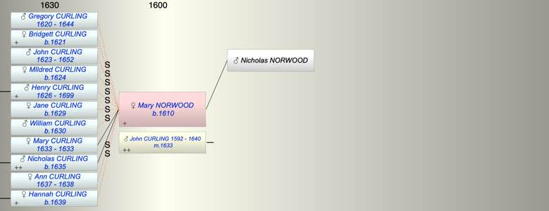

| [Index] |
| Mary NORWOOD (1610 - ) |
|  |
| b. 1610 at St Peters, Thanet |
| m. 03 Oct 1633 John CURLING (1592 - 1640) at St Peters, Thanet |
| Parents: |
| Nicholas NORWOOD |
| Children (2): |
| Mary CURLING (1633 - 1633) |
| Nicholas CURLING (1635 - ) |
| Grandchildren (6): |
| Elizabeth CURLING (1661 - ), John CURLING (1665 - 1744), Sarah CURLING (1666 - ), Robert CURLING (1668 - ), Anne CURLING (1669 - ), Mary CURLING (1672 - ) |
| Events in Mary NORWOOD (1610 - )'s life | |||||
| Date | Age | Event | Place | Notes | Src |
| 1610 | Mary NORWOOD was born | St Peters, Thanet | Note 1 | ||
| 1633 | 23 | Birth of daughter Mary CURLING | St Peter, Thanet | Note 2 | |
| 1633 | 23 | Death of daughter Mary CURLING | St Peter, Thanet | Note 3 | |
| 03 Oct 1633 | 23 | Married John CURLING (aged 41) | St Peters, Thanet | Note 4 | |
| 1635 | 25 | Birth of son Nicholas CURLING | St Peters | Note 5 | |
| 1638 | 28 | Death of step daughter Ann CURLING (aged 1) | Thanet | buried St Johns 3 Jul 1636 | |
| 1640 | 30 | Death of husband John CURLING (aged 48) | Note 6 | ||
| abt 1644 | 34 | Death of step son Gregory CURLING (aged 24) | |||
| 1652 | 42 | Death of step son John CURLING (aged 29) | not found | ||
| 1699 | 89 | Death of step son Henry CURLING (aged 73) | St Laurence | Note 7 | |
| Death of father Nicholas NORWOOD | died before 1633 | ||||
| Personal Notes: |
| Curlinge, John, of S. Peter's in Thanet, g., widr., and Mary Norwood, s. p., v., about 24, d. of Nicholas Norwood, late s. p., dec, and now at her own govt. At same. George Everden of S. Martin " ad montem," Cant., maltster, bonds. Sept. 30, 1633. |
| Created on a Mac™ using iFamily for Mac™ on 8 Oct 2023 |